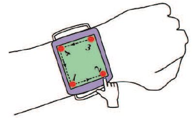

About Me
Hi! I am a MS (By Research) student at IIT Kharagpur.The topic of my MS dissertation was Development of a non-invasive way to estimate blood glucose and Glycated hemoglobin (HbA1c). I obtained my B.Tech in Electronics and Communication Engineering from West Bengal University of Technology, Kolkata.
My area of research interest is Medical Electronics, particularly Medical Internet of Things.
Professional Experience
● Project Engineer | SRIC-IIT Kharagpur | (June '15 - September '17) |
● Project Assistant | Centre for Educational Technology, IIT Kharagpur | Developing suitable pedagogical methods for various classes, intellectual calibers and research in E-learning ICE - Main Phase (Dec '12 - June '15)
● Trainee Engineer (Electronics) | Gimatex Industries Pvt. Ltd | Wani Unit (Dec '10 - Jan '12)
Awards and Fellowships
● Merit-Cum-Means Scholarship from Government of West Bengal, 2006 - 2010.
Publications
 Rajkumar Darbar, Prasanta Kr. Sen, Debasis Samanta, PressTact: Side Pressure-Based Input for Smartwatch Interaction. In Proceedings of the 34th ACM Conference on Human Factors in Computing Systems (CHI 2016), 7 - 12 May, 2016, San Jose, CA, USA. PDF | Video
Rajkumar Darbar, Prasanta Kr. Sen, Debasis Samanta, PressTact: Side Pressure-Based Input for Smartwatch Interaction. In Proceedings of the 34th ACM Conference on Human Factors in Computing Systems (CHI 2016), 7 - 12 May, 2016, San Jose, CA, USA. PDF | Video
 Rajkumar Darbar, Prasanta Kr. Sen, Punyashlok Dash, Debasis Samanta, Using Hall Effect Sensors for 3D space Text Entry on Smartwatches. In Proc. of the 7th IEEE Int. Conf. on Intelligent Human Computer Interaction (IHCI 2015), 14 - 16 Dec, 2015, IIIT Allahabad, India. PDF | Video